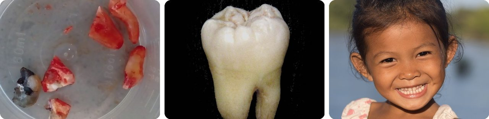
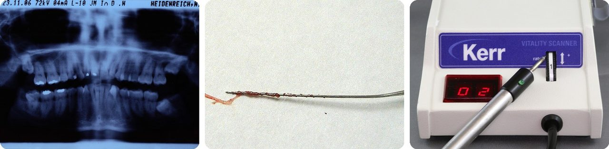

🌍 Top 10 Cómo son los dientes, las caries y curiosidades dentales
17 de noviembre de 2026
1. 💎 El esmalte de los dientes es lo más duro de tu cuerpo

La capa blanca y brillante de afuera del diente es el esmalte, y es más duro que cualquier hueso que tengas. Es 96% mineral, sobre todo un cristal hecho de calcio y fosfato, y no mide más de 2.5 mm de grueso, más o menos como dos monedas delgadas una encima de la otra.Pero también es frágil y tiene una gran debilidad: no está vivo. Las células que fabrican el esmalte se deshacen antes de que el diente salga por la encía.
Así que el esmalte no tiene nervios, ni sangre, ni forma de volver a crecer. Tu boca puede reparar daños pequeñitos al principio, pero cuando ya se forma un hoyo de verdad, ni tu cuerpo ni el dentista pueden hacer que crezca otra vez. Una resina o amalgama solo tapa el hueco.
Es una armadura que nunca se repara, solo se parcha.
2. 🧊 Debajo del esmalte, tus dientes están llenos de tubitos
 Debajo del esmalte está la dentina, una capa amarillenta, más blanda, que le da su color al diente. Está repleta de túneles microscópicos llamados túbulos dentinarios. Cerca del centro hay de 59,000 a 76,000 en un solo milímetro cuadrado, un puntito del tamaño de la punta de un lápiz.
Debajo del esmalte está la dentina, una capa amarillenta, más blanda, que le da su color al diente. Está repleta de túneles microscópicos llamados túbulos dentinarios. Cerca del centro hay de 59,000 a 76,000 en un solo milímetro cuadrado, un puntito del tamaño de la punta de un lápiz.
Cada tubito tiene un bracito delgado de una célula viva y un poco de líquido. Cuando el esmalte se desgasta y esos tubitos quedan al aire, la idea más aceptada es esta: algo frío hace que el líquido se mueva → ese movimiento activa el nervio → sientes ese "toque" agudo.
Y, a diferencia del esmalte, la dentina sigue creciendo poquito a poco toda tu vida.
Piénsalo como una esponja llena de popotes diminutos que van todos a un nervio.
3. 🔴 Cada diente tiene un centro vivo que se encoge con los años

En el centro de cada diente está la pulpa: tejido blandito con nervios y vasos sanguíneos. Va desde una cámara en la corona hasta unos canales delgados dentro de las raíces.La pulpa de un diente adulto mide apenas unos 0.02 centímetros cúbicos, menos de media gota de agua. Sus células de afuera son las que siguen fabricando dentina nueva.
Como esa dentina nueva se va acumulando por dentro, la cámara de la pulpa se hace más chica con la edad. Si la caries llega a la pulpa, el dentista puede tener que hacer una endodoncia, o sea, limpiar la pulpa por completo.
En otras palabras, un diente es un cascarón duro alrededor de un centro chiquito y vivo.
4. 🍬 El azúcar no pica los dientes, las bacterias que se lo comen sí
 Para que salga una caries se necesitan cuatro cosas: un diente, las bacterias indicadas, azúcar y tiempo. La principal culpable es una bacteria llamada Streptococcus mutans que vive en la capa pegajosa de tus dientes, la placa.
Para que salga una caries se necesitan cuatro cosas: un diente, las bacterias indicadas, azúcar y tiempo. La principal culpable es una bacteria llamada Streptococcus mutans que vive en la capa pegajosa de tus dientes, la placa.
Cuando comes azúcar, estas bacterias también comen, y la convierten en ácido láctico. En cuanto la placa baja de un pH de 5.5 (un poquito menos ácido que el café negro), el esmalte empieza a disolverse. Además, convierten el azúcar de mesa en un pegamento que les ayuda a agarrarse del diente.
Por eso importa qué tan seguido comes golosinas: después de cada bocado dulce, el ácido en la placa sube rapidísimo. En 2016, unos 3,600 millones de personas, casi la mitad del mundo, tenían caries en sus dientes permanentes.
O sea, cada dulce lo compartes con bacterias, y lo que te dejan es ácido.
5. 🪨 El sarro es placa endurecida llena de bacterias fosilizadas
 Si la placa se queda mucho tiempo en tus dientes, los minerales de tu saliva se meten en ella y la endurecen hasta volverla sarro, también llamado cálculo dental.
Si la placa se queda mucho tiempo en tus dientes, los minerales de tu saliva se meten en ella y la endurecen hasta volverla sarro, también llamado cálculo dental.
Al endurecerse mueren las bacterias de adentro, pero queda una superficie áspera donde la placa nueva se pega todavía más rápido → se acumulan más capas → irrita las encías y puede hincharlas y hacer que se retiren. Una vez duro, el cepillo ya no lo quita. Tiene que rasparlo un higienista dental.
Los científicos lo comparan con el concreto, con las bacterias muertas como la grava. Está tan apretado que un miligramo, una boronita más chica que un grano de arroz, tiene unos 200 millones de células. El sarro que encuentran en excavaciones arqueológicas incluso guarda ADN y restos de comida que muestran lo que la gente comía hace mucho.
Es un diario de tus comidas, escrito en piedra sobre tus dientes.
6. 🥤 Los refrescos y los jugos pueden desgastar los dientes sin nada de bacterias
 Las caries vienen de bacterias, pero la erosión ácida no. Es el ácido de la comida y las bebidas disolviendo el esmalte directamente. Es el problema crónico más común en niños de 5 a 17 años.
Las caries vienen de bacterias, pero la erosión ácida no. Es el ácido de la comida y las bebidas disolviendo el esmalte directamente. Es el problema crónico más común en niños de 5 a 17 años.
Las bebidas con un pH por debajo de 5.0 a 5.7, más o menos, pueden causarla. En los refrescos de cola el problema no son las burbujas, sino los ácidos cítrico y fosfórico que les ponen para darles sabor. Los jugos de fruta también son tramposos: resisten más que otras bebidas probadas el esfuerzo de tu saliva por neutralizar el ácido.
Importa más qué tan seguido que cuánto. Tomar a sorbitos una bebida ácida una y otra vez es como volver a meter tus dientes al ácido cada rato.
Es como si tus dientes se fueran derritiendo poco a poco en un baño de ácido suavecito.
7. 🇺🇸 Unos dientes con manchas cafés en Colorado llevaron al flúor
 A principios del siglo XX, un dentista llamado Frederick McKay notó que mucha gente en Colorado tenía los dientes con manchas cafés, conocidas como la "mancha café de Colorado". Lo raro: esos dientes manchados casi nunca tenían caries.
A principios del siglo XX, un dentista llamado Frederick McKay notó que mucha gente en Colorado tenía los dientes con manchas cafés, conocidas como la "mancha café de Colorado". Lo raro: esos dientes manchados casi nunca tenían caries.
McKay pasó 30 años investigando el misterio. En 1931, un químico analizó el agua de varios lugares donde la mancha era común y encontró la respuesta: flúor natural en el agua potable.
Luego los científicos descubrieron que una cantidad pequeña, como 1 miligramo por litro, previene las caries y, cuando mucho, deja marquitas muy leves en vez de manchas cafés. El 25 de enero de 1945, Grand Rapids, Michigan, se volvió la primera ciudad en ponerle flúor a propósito a su agua, y para 1950 los resultados mostraban muchas menos caries.
O sea, un misterio de manchas se convirtió en agua de la llave que combate las caries.
8. 👶 Tus dientes de adulto se esconden en tu mandíbula mientras usas los de leche
 Los niños tienen 20 dientes de leche. Empiezan a formarse antes de nacer, cuando el bebé apenas lleva 8 semanas creciendo, y suelen empezar a salir alrededor de los 6 meses.
Los niños tienen 20 dientes de leche. Empiezan a formarse antes de nacer, cuando el bebé apenas lleva 8 semanas creciendo, y suelen empezar a salir alrededor de los 6 meses.
Mientras tanto, los dientes permanentes crecen en el hueso de abajo. Cuando cada uno va subiendo, empuja las raíces del diente de leche → unas células especiales disuelven esas raíces → el diente de leche se mueve y se cae. Esto suele pasar entre los 6 y los 12 años.
En Turquía y Grecia, los niños avientan el diente que se les cayó al techo y piden un deseo. En India, Corea y Vietnam, los niños a veces lo avientan al techo y piden a cambio un diente de ratón, porque los dientes de los ratones nunca dejan de crecer.
Piénsalo como un segundo juego de dientes haciendo fila para que les toque su turno.
9. 🇺🇸 Los dientes postizos de George Washington nunca fueron de madera
 El 30 de abril de 1789, cuando George Washington se convirtió en el primer presidente de EE. UU., solo le quedaba un diente propio. En su vida tuvo por lo menos cuatro dentaduras postizas.
El 30 de abril de 1789, cuando George Washington se convirtió en el primer presidente de EE. UU., solo le quedaba un diente propio. En su vida tuvo por lo menos cuatro dentaduras postizas.
Mucha gente cree que eran de madera, pero no tenían nada de madera. Estaban hechas de marfil de hipopótamo, latón, oro, dientes de animales y dientes humanos. Unos resortes separaban la parte de arriba y la de abajo, y unos pernos las mantenían unidas.
Él decía que había perdido los dientes por romper nueces con ellos. Los registros también muestran que en 1784 les pagó a personas esclavizadas de Mount Vernon por nueve dientes; los historiadores todavía discuten si esos dientes eran para él.
Su sonrisa tenía más de caja de herramientas que de dientes.
10. 🪥 Antes de los cepillos de dientes, la gente masticaba palitos
 El antepasado del cepillo de dientes es el palito para masticar: una ramita con la punta deshilachada que te tallabas en los dientes. Los más antiguos son de alrededor del año 3500 a. C., en Sumeria, en lo que hoy es Irak. Mucha gente todavía los usa, como el miswak en el mundo musulmán.
El antepasado del cepillo de dientes es el palito para masticar: una ramita con la punta deshilachada que te tallabas en los dientes. Los más antiguos son de alrededor del año 3500 a. C., en Sumeria, en lo que hoy es Irak. Mucha gente todavía los usa, como el miswak en el mundo musulmán.
El primer cepillo con cerdas parecido al nuestro salió de China durante la dinastía Tang (619–907). Tenía cerdas de cerdo amarradas a un mango de bambú o de hueso. Los cerdos venían de lugares fríos como Siberia, porque el frío hacía sus cerdas más firmes.
Los europeos tomaron la idea en el siglo XVII, pero las cerdas de cerdo les parecían muy duras, así que muchos usaron crin de caballo, que es más suave. Las cerdas de nailon apenas llegaron en 1938.
En otras palabras, tu cepillo de dientes es la versión elegante de una ramita masticada.
Dato curioso
Se cree que el primer cepillo de dientes fabricado en masa en Gran Bretaña se le ocurrió a alguien en la cárcel. En 1770, a William Addis lo encerraron por armar un disturbio, y decidió que tallarse los dientes con un trapo, hollín y sal no era suficiente. Guardó un huesito de una comida, le hizo agujeros y le pegó cerdas que le consiguió un guardia; al salir, puso un negocio de cepillos de dientes que lo hizo rico, y su familia lo manejó hasta 1996. Y eso hace pensar qué otros inventos de todos los días se le ocurrieron a alguien tras las rejas.
Créditos de las fotos (Wikimedia Commons)
- #1: Molar cut up during extraction - 2018-08-29 - Andy Mabbett -.jpg by Andy Mabbett, CC BY-SA 4.0
- #1: Lower wisdom tooth.jpg by No machine-readable author provided. Gleam~commonswiki assumed (based on copyright claims)., CC BY-SA 3.0
- #1: Young girl smiling with teeth in sunshine.jpg by Basile Morin, CC BY-SA 4.0
- #2: Dentinal tubules.jpg by Pinkmanggis, CC BY-SA 4.0
- #2: Dentinal tubules. Transverse ground section (rawpixel) by thegetty, CC0
- #2: Odontoblasts, showing Tomes's fibers entering (rawpixel) by thegetty, CC0
- #3: Dental X-Ray (flickr) by schoschie, CC BY 2.0
- #3: Pulp tissue removed during endodontic therapy by a size 20 broach file.jpg by DRosenbach at en.Wikipedia, Public domain
- #3: Electric pulp tester unit.jpg by Coronation Dental Specialty Group, CC BY-SA 3.0
- #4: Various candy and lollipops, 2007.jpg by Nick Carter, CC BY 2.0
- #4: Dental Caries Lower Right First Molar.jpg by Dr. Yogesh, CC BY-SA 4.0
- #4: Dental Caries Cavity 2 (cropped).JPG by Suyash.dwivedi, CC BY-SA 4.0
- #5: Dental Calculus.jpg by JonathanPulse, CC0
- #5: Sarro.jpg by Roquex, CC0
- #5: MandibularAnteriorCalculus.JPG by DRosenbach at English Wikipedia, Public domain
- #6: Mexican Coca Cola.jpg by Mike Mozart, CC BY 2.0
- #6: Молочный зуб любителя кока-колы.jpg by Anastasialogunov, CC BY 4.0
- #6: Coca-Cola glass bottle.jpg by Oleg Yunakov, CC BY-SA 4.0
- #7: Dental Flurosis (teeth with brown stains).jpg by Nizil Shah, CC BY-SA 4.0
- #7: Dental fluorosis (mild).png by Matthew Ferguson 57, CC BY-SA 4.0
- #7: Gezicht op Colorado Springs en het spoorwegstation met op de achtergrond de Pikes Peak Colorado Springs and Pikes Peak (titel op object), RP-F-2012-96-220.jpg by Rijksmuseum, CC0
- #8: Pano8.png by Roquex, CC0
- #8: Smiling young girl with deciduous teeth.jpg by Basile Morin, CC BY-SA 4.0
- #8: Deciduous teeths.jpg by Sebastian Wallroth, Public domain
- #9: Washington Teeth.jpg by BakedintheHole, CC BY-SA 4.0
- #9: Gilbert Stuart - George Washington (The Athenaeum Portrait) - Google Art Project.jpg by Gilbert Stuart, Public domain
- #9: West Face of Mansion, Mount Vernon, Near Alexandria, Virginia (2731038734).jpg by Ken Lund from Reno, Nevada, USA, CC BY-SA 2.0
- #10: Miswak 2014.jpg by محمد الفلسطيني, CC BY-SA 3.0
- #10: Napoleon Bonaparte's Toothbrush Wellcome L0043828.jpg by unknown, CC BY 4.0
- #10: Miswak003.jpg by Middayexpress, CC BY-SA 3.0


.JPG){kind=link}


.jpg){kind=link}
.png){kind=link}
,_RP-F-2012-96-220.jpg){kind=link}


_-_Google_Art_Project.jpg){kind=link}
.jpg){kind=link}